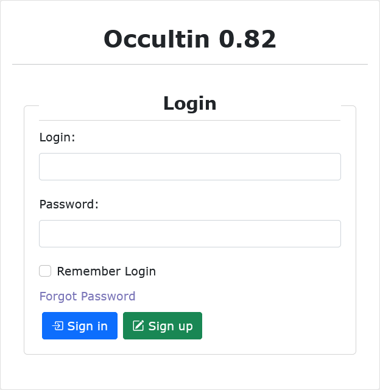

Getting Started
Install OccultIn
The OccultIn Software is available to download via Download Windows for a Windows operational system and in Download Linux for a Linux operational system. Save and execute the installation in your system. In windows you will have an executable file. In Linux you must run the shell file.
Supported Operating Systems
The interface was developed and tested for Windows 10, 11 and Linux operating systems. In linux, we expect compatibility with most recent versions. It has also been successfully tested in Ubuntu Linux operating systems through wine-7.5 (Staging) if using the windows version.
Known Possible Issues
In some system configuration scenarios, you may expect some unwanted behaviors, It is important to add that these are not bugs in the software. Additional configurations may be needed for perfect functioning.
Old versions cached data
If already installed in the machine, the Occultation Interface cached information may interfere with the new version. Configurations may be conserved and some problems arose from that fact. To solve this problem, the interface, when run for the first time, will erase all cached data and end its section for completeness. After that, everything is expected to work properly.
PATH Environment Variable
Before starting any project, please make sure that in your environmental variables (Windows or Wine/Linux), a new implicit ‘.’ directory path is added. The absence of it will cause failure in generating the occultation maps images, and ultimately, also failing to complete the task of predicting occultations. The process behind adding a new folder to your system path will depend on which SO you’re using, but it can easily be found in other sources and tutorials. Just make sure you call it “.” (symbol dot).
Running OccultIn
Once installed we are interested in running the application. This process differs depending on your operational system.
Windows
In windows the process is very forward and it consists of running the ‘AsyncQueueTasks’ file or the icon which is generated for the application.
Linux
In Linux there is a second option in the execution of the interface. One may run it locally or as a server. To do so, respectively, one should run the files “OccultIn.sh” or “OccultIn-server.sh”. To run locally, one can also simply use the icon of the application.
Creating a User Account
When you start the application for the first time, it is necessary to sign up for a user account. The OccultIn interface is developed to support multiple users and, therefore, an account is needed to start using the interface. The account consists of a user, an email, and a password.
{kind=link}
You can sign in or sign up when you open the application. If you do not have an account yet, you can go to the “Sign Up” page, where you will be asked to add your information. Since you are using a If you are using the desktop version, all information iswill be stored locally and will be erased if you delete the application from your machine. Although now the usage is local, an email is required for compatibility proposes for future web applications.
A username and email can be only associated with a single account. Duplicates are not allowed. Only one account is permitted for each email and you can’t use the same username twice, since it is an identifier. For now, there are noaren’t restrictions on your password, as it is, currently, a local application.
After submitting it, you have created an account! Add your email or username (both options work) and password to enter it. If the option “Remember Login” is selected, you will not be asked for this information again when you reopen the application and will automatically log into your account. If needed, there is an option to reset your password.